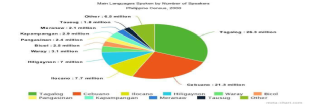
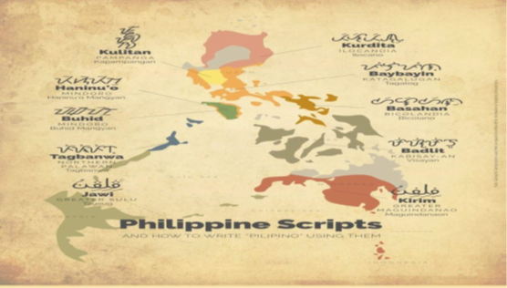
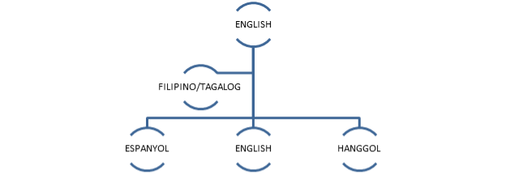
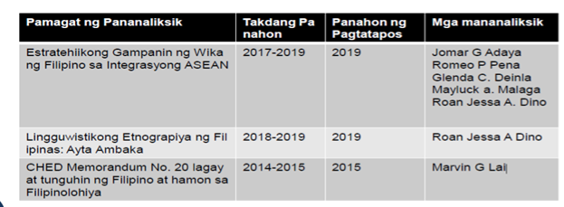
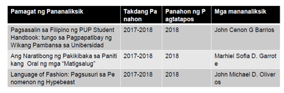

FILDIS: FILIPINO SA IBAT-IBANG DISIPLINA
ANG FILIPINO BILANG WIKANG PAMBANSA
WEEK 1
Batay sa awitin na inawait kanina, ano ang kinalaman nito sa pagkakaroon ng maraming wika sa bansang Pilipinas? Ayon kay Roberto T. Anonuevo, Direktor –Heneral ng Komisyaon sa Wikang Filipino (2018) Napatunayan ng (wikang) Filipino na kaya itong tanggapin sa iba’t ibang rehiyon at gawing katuwang ng wika ng rehiyon dahil ang komposisyon ng Filipino ay hindi nalalayo sa naturang wika. Ayon kay Dr. Ernesto Constantino at Pamela Costantino mayroong 100 wika sa Pilipinas

(Ang larawan na ito ay kinuha sa google.com)
Makikita sa Grap ang mga pursyeto o dami ng tao na nagsasalita sa wikang kanilang kinasanayan, ang mga Wika na nasa Grap at ang Sampong (10) ng wika sa Pilipinas na ginagaamit ng nakararaming mamamayan
Batay naman kay Lorenzo Hueves y Panduro (1784) bago pa ang kolonyalisasyon ay pamilya ng
malayo-polinesyo ang wikang Filipino. Sa Pananaliksk nina Costantino at Wilhelm Schmidt
(1899) na Awstronesyan ang pamilya ng wika ng kinabibilangan ng mga wika sa Pilipinas

(Ang larawan ay kinuha sa Google)
sa larawan ang mga sinaunang paraan ng pagsulat sa iba’t ibang probinsiya ng Pilipinas, Kung mapapansin ninyo magkakamukha ang mga paraan nila ng pagsulat. Katunayan ito na maraming naging kamag anak ang mga wika sa Filipinas tungo sa ibang bansa
Pagpasok ng Ibang wikang Kolonyal sa Pilipinas

Makikita sa Grap kung paano nakulong ang wikang Filipino sa wika ng ibang bayan batay kung sa paano ito namulaklak sa kultura at wiikang Filipino, ang pagiging Multilinggual ng Pilipinas ay naging instrumento upang mag karoon ng adaptasyon ang wika ng ibang bayan sa wikang Filipino
4.2 Makilala ang mga bansang Multilingual din ang gamit sa Edukasyon
Mga bansang Multilingual
ARUBA
Isa sa mga bansang bumubuo ng kaharian ng Netherlands at malapit sa Venezuela
Wika
Papianmento
Wikang Umusbong mula sa portures, Kastila, Dutch at Ingles
East timor (Timor-Leste)
Wika Tetum
May kabisahan din sa wikang Portuges at Ingles
India Wika
Hindi at English ang opisyal na wika
Luxembourg
Luxembourish ang wika ng maliit na bansa
(Hiram na salita mula sa salitang pranses ang Luxembourish)
MAlAYSIA
Wika Malay (opisyal na wika)
Malay at English ang parehong ginagamit sa panturo
Mandarin (tinuturo sa mga may lahing tsino)
Mauritius
Bansang tinuturing na bahagi ng Africa.
Wika Eglish at Pranses (wika ng paaralan)
Mauritian Chreole (Wikang umusbong sa Pranses ngunit hindi naiintindihan ng mga Pranses)
Singapore
Wika Mandarin Chinese, Malay at Tamil (opisyal na wika ng Singapore)
English (Lingua Franca)
South Africa
Labing isa (11) ang opisyal na wika.
English (Lingua Franca)
Afrikaan (wikang gamit sa kanlurang kontinente)
Suriname
Hilagang America
Wika Dutch (Paaralan, kalakaran at midya)
Sranan Tongo (Sranan) (wika na may impluwensyang dutch)
1.3 Maunawaan ang Mother-Tongue-Based Multilingual Education
Hamon ng Mother-Tongue-Based Multilingual Education
Habang nililinang at pinauunlad ang Filipino, nang naluklok na Pansamantalang Punong Komisyoner ng KWF si Dr. Ricardo Ma. Duran Nolasco ay naging direksiyon ng ahensiya ang pagtangkilik sa multilingguwalismo. Katuwang ang Kongresista o Representatibo na si Kgg. at abugado magtanggol Gunigundo ng Valenzuela. Ang Orihinal na House bill blg. 4719 na humihikayat na ipagamit ang unang isinumite sa Senado noong 2008 na ang paksa ay ang pagpapagamit sa unang wikang bilang midyum ng pagtuturo sa mga basikong edukasyon Kinatigan ito ng kagawaran ng Edukasyon at isport sa pamamagitan ng paglalabas ng Ordinansa Blg. 74 na nagtatalakay sa pagsasainstitusyon ng paggamit ng unang wika ng mga mag-aaral.
Napakalaki ng naging epekto ng pangsasakatuparan ng Mother-Tonguebased, Multilinggual Education o MTB-MLE. Isa iton sa mga naging bagong direksyon sa pag-iimplementa ng K to 12.
WIKANG FILIPINO ANG WIKA NG BAYAN AT MAGING NG AKADEMYA
WEEK 2
Ayon kay G. Eugene Y. Evasco ang anomang wika sa daigdig tulad ng wikang Filipino, ay nalilikha, nililinang, pinagyayaman at hindi lamang basta isinilang. Kaya naman masasabi ring ang wika ay may kakayahang makiangkop sa pagbabagong nagaganap sa lipunang kayang pinagsisilbihan
Malinaw na pinapahayag ni E. Evasco ang kalakasan ng wika pagdating sa usapin ng paggamit dito sa umiiral na buhay ng isang Bansa.
Sa Panahon ni dating pangulong Gloria Makapagal-Arroyo ginawa ang Pang-ehekutibo (E.O) 210 na nag-aanyas na ibalik ang Ingles bilang wikang panturo sa bansa.
Nilimitahan ang paggamit ng wikang Filipino at itinakda nalamang ito bilang wikang panturo sa mga asignaturang Filipino at araling Panlipunan
Sinusugan pa ito ng kongreso nang ipasa ang House Bill 4701
“Act Prescribing English as Medium of Instruction in the Philippines School”
Taliwas ito sa mga obsebasyon ng mga kritiko. Pinatunayan ito ng pag-aaral ng UNITED NATION (UN)
Ayon sa United Nation (UN)
The Organization is fully aware of the crucial importance of languages when seen against the many challenges that humanity will have to face over the next few decades.
Languages are indeed essential to the identity of group and individual and to their peaceful coexistence
4.2 Makapagpahayag ng mga makabuluhang kaisipan sa pamamagitan ng tradisyonal at modernong midya
Marami ang nanatiling buo ang paniniwala na ang mga umiiral na wika sa Pilipinas ay ang sagot sa mga suliranin ng Pambansang Edukasyon.
Ayon kay Dr. David San Juan ng konvinor ng Tanggol Wika at dalubguro sa Pamantasan ng De La Salle, ang Wikang Pambansa ang tanging wika ng mga kilusang panlipunan.
Ang Pagsilang ng Tanggol Wika
Sa inilabas na Memo ng CHED na CMO #20, Serye ng 2013 tahasang inaalis ang mga asignaturang sa wika, agham panlipunan at kasaysayan sa antas ng tersyaryo.
Dr. David San Juan (Dalubguro ng Pamantasang De La Salle University
(Ang larawan ay kinuha sa Google.com)
Matapos ilabas ang CMO #20, serye ng 2013 nagkaroon ng protesta at pagkilos napinangunahan ng Tanggol Wika o mga Tagapag tanggol sa wika na pinangungunahan ni Dr. Davin San Juan ng De La Salle University
Naglabas si Dr. David San Juan ng isang Papel na may Pamagat na Alyansa ng Mga Tagapagtanggol bg Wikang Filipino/TANGGOL WIKA Internal na kwento, Mga Susing Argumento at Dokumento (2-14-2017)
ARGUMENTO 1: WALANG MAKABULUHANG ARGUMENTO ANG MGA ANTI-FILIPINO – ANG KAMPONG TANGGAL WIKA – SA PAGPAPATANGGAL NG FILIPINO AT PANITIKAN
ARGUMENTO 2: DAPAT MAY FILIPINO AT PANITIKAN SA KOLEHIYO DAHIL ANG IBANG ASIGNATURA NA NASA JUNIOR AT/O SENIOR HIGH SCHOOL AY MAY KATUMBAS PA RIN SA KOLEHIYO
ARGUMENTO 3: ANG FILIPINO AY DISIPLINA, ASIGNATURA, BUKOD NA LARANGAN NG PAG-AARAL, AT HINDI SIMPLENG WIKANG PANTURO LAMANG
ARGUMENTO 4: PARA MAGING EPEKTIBONG WIKANG PANTURO ANG FILIPINO, KAILANGANG ITURO AT LINANGIN DIN ITO BILANG ASIGNATURA
ARGUMENTO 5: BAHAGI NG COLLEGE READINESS STANDARDS ANG FILIPINO AT PANITIKAN
ARGUMENTO 6: SA IBANG BANSA, MAY ESPASYO RIN SA KURIKULUM ANG SARILING WIKA BILANG ASIGNATURA, BUKOD PA SA PAGIGING WIKANG PANTURO NITO
ARGUMENTO 7: BINIGYAN NG DEPED AT CHED NG ESPASYO ANG MGA WIKANG DAYUHAN SA KURIKULUM, KAYA LALONG DAPAT NA MAY ESPASYO PARA SA WIKANG PAMBANSA
ARGUMENTO 8: PINAG-AARALAN DIN SA IBANG BANSA ANG FILIPINO – AT MAY POTENSYAL ITONG MAGING ISANG NANGUNGUNANG WIKANG GLOBAL – KAYA LALONG DAPAT ITONG PAG-ARALAN SA PILIPINAS
ARGUMENTO 9: MALAPIT ANG FILIPINO SA BAHASA MELAYU, BAHASA INDONESIA, AT BRUNEI MALAY, MGA WIKANG GINAGAMIT SA MALAYSIA,
SINGAPORE, INDONESIA, AT BRUNEI, NA MGA BANSANG KASAPI NG ASEAN, KAYA’T MAHALAGANG WIKA ITO SA KONTEKSTO MISMO NG ASEAN INTEGRATION
ARGUMENTO 10: MABABA PA RIN ANG AVERAGE SCORE NG MGA ESTUDYANTE SA FILIPINO SA NATIONAL ACHIEVEMENT TEST (NAT)
ARGUMENTO 11: FILIPINO ANG WIKA NG MAYORYA, NG MIDYA, AT NG MGA KILUSANG PANLIPUNAN: ANG WIKA SA DEMOKRATIKO AT MAPAGPALAYANG DOMEYN NA MAHALAGA SA PAGBABAGONG PANLIPUNAN
ARGUMENTO 12: MULTILINGGWALISMO ANG KASANAYANG AKMA SA SIGLO 21
ARGUMENTO 13: HINDI PINAUNLAD, HINDI NAPAUNLAD AT HINDI MAPAPAUNLAD NG PAGSANDIG SA WIKANG DAYUHAN ANG EKONOMYA NG BANSA
ARGUMENTO 14: MAY SAPAT NA MATERYAL AT NILALAMAN NA MAITUTURO SA FILIPINO AT PANITIKAN SA KOLEHIYO
Panunuri sa Kahalagahan ng Wikang Filipino
Ayon kay Bienvenido Lumbera Sa pagtanggap natin sa wika, pumapaloob tayo sa isang lipunan at nakikiisa sa mga taong naroon
Samakatuwid ang kamalayan natin bilang indibiduwal at karugtong ng kamalayan ng iba sa lipunan. Kapag may kapanguarihang sumakop sa kamalayan ng kapwa natin sa lipunan, kasama tayong napapasailalim sa nasabing kapangyarihan,
Ang sariling wika ay hindi nakakabawas ng katalinuhan at katangahan kung gagamitin sa iba’t ibang larangan, Kung ay usapin ay karunungan.
FILIPINO BILANG WIKA NG SALIKSIK SA IBA’T IBANG LARANG I. PANIMULA
WEEK 3
-Maisapraktika at mapaunlad pa ang mga batayang kasanayan sa pananaliksik
Halina’t ilamin ang kinalaman ng mga salita sa Pananaliksik sa iba’t ibang Larang
FILIPINO BILANG WIKA NG SALIKSIK SA IBA’T IBANG LARANG
Sa pagtalakay sa Filipino bilang wika ng saliksik, hindi maisasantabi ang pagtalakay sa intektwalisasyon ng Filipino. Iniaangat ng bayan ang antas ng wika sa estado nagagamit ito sa intelekwal na usapin at intelektwal na materyales o babasahin.
Kinikilala ang pananaliksik bilang refleksiyon ng talino at husay ng mananaliksik, matagal nang nakasusulat ng pananaliksik sa Filipino ang mga Pilipino lalo na ang mga nakapagdalubhasa sa Filipino.
Marami nang mga aklat sa matematika at Agham ang tinangkang isulat sa Filipino. May mga aklat pangmedisina o pangkalusugan ang naisulat sa Filipino.
Pananaliksik sa Agham at teknolohiya
Marahil kung walag pananaliksik ay atrasado pa rin ang ating pamumuhay sa kasalukuyan. Ang mga kagamitang pantahanan ay mas higit na nagpapadali sa mga gawain ng bawat miyembro ng pamilya. Higit na nagkakaroon ng mabilis na komunikasyon ang bawat isa kahit na nasa malayong distansya bunga ng pagkakatuklas ng mga cellphone.
Pananaliksik sa Negosyo at Industriya
Ang pagpapatupaf ng mga kapasyahan sa isang negosyo ay batay na rin sa resulta ng maingat na pagpaplano at pagsusuri kung aling pananaliksik ang higit na angkop sa lalong ikaangat ng negosyo.
Pananaliksik sa Edukasyon
Higit sa lahat mahalaga ang pananaliksik sa larangan ng edukasyon. Mahalaga makapagtatag ng matibay na pundasyon ng karunungan sa isip ng mga mag-aaral sa pamamagitan ng pagtuklas ng mga pamamaraang lalong makapagpapaunawa sa mga mag-aaral ng kanilang lektura. Ang inobasyon sa pasilidad at kagamitang panturo ay nakasalalay din sa gagawing pagtuklas sa pananaliksik ng mga implikasyon nnito sa larangang akademiko
Pananaliksik sa Politika
Dito higit na kailangan ng maingat na pag-aaral at pag-iimbestiga sa larangang ito ay walang hanggang ang pagtuklas ng mga kaparaanan sa nagpapatatag ng ekonomiya at kalagayang pampulitika sa bansa.
Sa papanaw ng mga ekonomista ang pagkakaroon ng matatag na ekonomiya at maaring maging daan sa pagsasaayos ng kalagayan ng pampulitika ng bansa.
4.2 Makapagbasa at makapagbuod ng impormasyon, estadistika, datos atbp. mula sa mga babasahing nakasulat sa Filipino sa iba’t ibang larangan
Pananaliksik ng mga Guro
Ang mga sumusunod na halimbawa ng pananaliksik ng mga Guro ay ilan lamang sa mga gawa ng Guro. (Nasa Libro ng Filipino sa Iba’t ibang disiplina ang iba pang halimbawa Pahina 50-63

Pananaliksik ng mga mag-aaral
Ang mga sumusunod na halimbawa ng pananaliksik ng mga Guro ay ilan lamang sa mga gawa ng mag-aaral. (Nasa Libro ng Filipino sa Iba’t
Ibang disiplina ang iba pang halimbawa Pahina 63-69

MGA TERMINONG INGLES MULA SA IBA’T IBANG LARANGAN ISINALIN SA FILIPINO
WEEK 4
Isa sa mga dapat gawin upang makapanaliksik sa Filipino ay ang bigyang-malasakit ang mga teminong Ingles para sa iba’t ibang
larangan na isinalin sa Filipino. Narito ang ilang halimbawa ng
mungkahing termino
A. Mga Katawagan sa Edukasyong Panteknolohiya at Pangkabuhayan
Termino | Katumbas sa Filipino |
Accountant | Tagatuos |
Anatomy | Anatomiya |
Arc | Arko |
Athlete’s Foot | Alipunga |
Auditor | Tagasuri |
Bacteriology | Baktirilohiya |
Body | Kaha/katawan |
Nasa librong Filipino sa Iba’t ibang disiplina ang nilalaman ng buong halimbawa pahina 70-81)
A. Mga Katawagan sa Pagbobrodkas (Broadcasting)
Termino | Katumbas sa Filipino |
Abnormal Glow Discharge | Palyadong Ilaw |
Accelerating Anode | Anodong Pampalakas |
Accelerating Electrode | Elektrod na Pampalakas |
Acceleration | Pagpapabilis |
Acoustic | Akustika |
Air Time | Oras ng Palatuntunan |
Aperture | Guwang |
Auction | Isubasta |
Nasa librong Filipino sa Iba’t ibang disiplina ang nilalaman ng buong halimbawa pahina 70-81)
A. Mga Katawagan sa Adbertaysing
Termino | Katumbas sa Filipino |
Advertisement | Anunsyo |
A la carte service | Espesyal na serbisyo |
Box | Kahon |
Cartoon | Kartun |
Logo | Tatak |
Market | Mamimili |
Perception | Pananaw |
Wants | Kagustuhan |
(Nasa librong Filipino sa Iba’t ibang disiplina ang nilalaman ng buong halimbawa Pahina 70-81)
4.2 Makagawa ng mga mapanghikayat na presentasyon ng Impormasyon at analisis na akma sa iba’t-ibang teksto sa paggamit ng wikang Filipino
A. Mga Katawagan sa Pamamahayag (Journalism)
Termino | Katumbas sa Filipino |
Advancer | Paunang Balita |
Agate | Sukat ng tipo |
Alive | Malinaw na tipo |
Anti-sit-off | Pangapit-tinta |
Ascender | Maliit na letra (lower case) |
Banner | Bandera |
Beard | Pagpupuwang |
Bending roller | Rodilyo |
(Nasa librong Filipino sa Iba’t ibang disiplina ang nilalaman ng buong halimbawa Pahina 70-81)
A. Mga Katawagan sa Pelikula
Termino | Katumbas sa Filipino |
Act | Yugto |
Adaptation | Halaw |
Ad lib | Ad lib |
Animate | Pagbibigay-buhay |
Antagonist | Kontrabida |
Camera report | Log |
Candid | Nakaw na kuha |
Cans | Earphones |
(Nasa librong Filipino sa Iba’t ibang disiplina ang nilalaman ng buong halimbawa Pahina 70-81
A. Mga Katawagan sa Kasaysayan
Termino | Katumbas sa Filipino |
Abanderado | Abanderado |
Acuerdo | Akuwerdo |
Alcalde mayor | Alkalde mayor |
Almacen | Bodega/Kamalig |
Amanuensis | Kalihim |
Angelus | Orasyon |
Archives | Lagakan/Sinupan |
Armor | Baluti |
(Nasa librong Filipino sa Iba’t ibang disiplina ang nilalaman ng buong halimbawa pahina 70-81)
Kung susuriin ang mga mungkahing salita sa kolum ay tila mahirap tanggapin o maaring sabihin na hindi na angkop sa panahon.
Gayunpaman, marapat na bigyang-pagkakataon ang paggamit sa mga ito upang magkaroon ng kongkretong ebidensiya upang mapaunlad, marebisa at maisapraktika ang mga mungkahing salin ng termino.
Ayon kay P.L Strawson ang wika ay sumusunod lamang sa pagbabago ng mga bagay. Kapag nagbago ang bagay, nag-iiba rin ang wika.
Mga kabataan ang mga pangunahing naapektuhan ng mga uri ng
pahayag na nababasa gayudin ang mga ginagamit sa Social Media sa haba ng panahong iginugugol ng mga kabataan sa paggamit ng kompyuter,
Ang mga terminog Filipino na inasimila sa ingles o tunay na mga terminong Ingles na ginawang inisyal o pinaikli upang maging jargon ng Social media lalo na sa mga social networking sites
4.3 Malaman ang iba’t ibang salita na nabuo sa Social Media
MGA AKRONIM/KATAWAGANG PANSOSYALMIDYA
Akronim | Kahulugan |
ATM | At this moment |
BAE | Before Anyone Else |
BFF | Best Friend Forever |
HBD | Happy birthday |
LMK | Let me know |
LOL | Laugh out Loud |
JGH | Just Got Home |
LMAO | Laughing May Ass Off |
Narito ang mga ilang halimbawa ng Akronim na natutunan ng kabataan sa panahon ng Social Media, (Nasa inyong Libro sa Filipino sa Iba’t ibang disiplina ang kabuoan ng mga halimbawa. Pahina: 83-85
Dagdag pa sa mga naitalang salita, ang paggamit ng netizens ng tinatawag ng emoticon, isang simbolong ginagamit sa mga emosyong nais na ipahayag ng mga gumagamit ng SNS (Social Networking Sites)
Lumikha rin ang ibang mga kilalang personalidad sa larangang ng telebisyon at pelikula ng mga salitag naging bukam-bibig ng mga karaniwang tagatangkilik nito.
Masasabing bahagi pa rin ito ng penomenang nagdala sa wikang Filipino sa bago nitong bihis, anyo at gamit.
MGA AKRONIM/KATAWAGANG PANSOSYALMIDYA
Salita | Kahulugan |
Dramarama | Sunod-sunod na mga drama serye, pinauso ng GMA |
Havey | Nakakatuwa; pinauso ni Vice Ganda |
Keribels | Kaya yan |
Kontrabida | Katunggali ng bida |
Koreanovela | Mga serye mula sa Koreana |
PBB-teens | Mga dalaga’t binatang maagang nagpapakita ng pagkagusto sa isa’t isa |
Narito ang mga ilang halimbawa ng mga Salitang nalikha ng mga kilalang personalidad sa larangan ng telebeisyon at pelikula ,(Nasa inyong Libro sa Filipino sa Iba’t ibang disiplina ang kabuoan ng mga halimbawa. Pahina: 86-87
Salakas ng impluwensiya ng midya sa bansa, mailalahad ang mga sumusunod na obserbasyon: (a) Napaghahalo ang mg salitang Ingles sa Filipino, na nagiging dahila upang magkaroon ng mga panibagong salita. (b) ang mga salita ng Telebisyon ay nagiging bahagi na ng bokabularyong Filipino. (c) pinapaikli nito ang mga salita ng mahahabang salitang Filipino (d) Nagiging pamalit ang mga salita ng Telebisyon, sa mga salitang nakalimtan na o may restrikto na bawal sabihin sa midya.
FILIPINO SA PAMBANSANG INDUSTRIYALISASYON
WEEK 5
Sa proseso ng pagtatatag at pagpapaunlad ng mga industriya na magpapasigla sa ekonomiya at tutustos sa pang-ekonomiyang pangangailangan ng isang bansa. Tungo sa transformasyon ng ekonomiya mula agrarian patungong industriyal
Mabibigat na industriya
salik sa paglikha ng mga makina at sangkap sa produksyon
Intermedyong industriya
Lilikha ng mga spare parts para sa produksyon
Magagaan na industriya
Lilikha ng mga produksyong pangkunsumo ng mayayaman Sa indutriya nagmumula ang mga kagamitang kinakailangan ng mamamayan. Magbibigay rin ng batayang pangangailangan at sapat na trabaho Ang pag-unlad ng kaalaman at teknolohiya ay mapapabilis pang lalo sa pag-unlad ng produksyon
Malawak na kalupaan sa bansa
Mataba at pabor sa agrikulturaMahigit 12.4M ektaryang lupang agricultural ang tinataniman ng palay,niyog, mais, saing, tubo, cassava, manga, rubber at iba pa.
4.2 Malaman ang Kahalagayan ng Industriyaliyasyon
Napakasagana ng ating aquatic resources
200 milyong ektaryang karagatan, 421 na ilog, at mahigit 69 na lawa Noong 2011, ikalima ang pilipinas sa prodyuser ng isda sa buong mundo. Likas na mayaman ang Pilipinas sa iba’t ibang mineral Panglima sa buong mundo sa dami ng yamang mineral Aabot sa 58.1 bilyong metro tonelada Ang reserbang mineral sa bansa. Ikatatlo tayo sa pagprodyus ng ginto. Ika-apat sa copper, ikalima sa nickel, at ika-anim sa chromite sa buong mundo. Maraming mapagkukunan ng enerhiya Natural gas, geothermal, hydrothermal, solar, wind
Tinatayang aabot sa 39.5T cubic feet ang reserbang natural gas ng bansa. Sa geothermal resources naman ay airing umabot ng 2,600MW ang maaaring malikhang enerhiya. Maari ring pagkunan ng hydrothermal energy ang mahigit na 400 na ilog sa bansa. Sa taya, aabot ng 10,097MW ang potential energy na pwedeng ma-generate mula sa ating mga hydropower plants.
Malaking potensyal ng ating human resources
Aabot ng 26 milyon ang skilled workers na may trabaho sa bansa. Sa 26M na skilled workers ng bansa, 2 milyon ditto ay mga propesyunal. Wala pa rito ang mga pwersa sa produksyon na hindi makakuha o hindi makapagtrabaho.
4.3 Malaman ang Kakulangan ng Pilipinas pagdating sa NI
Ano ang balakid sa pagtataguyod ng NI sa Pilipinas?
Hinubog an gating ekonomiya ng mga malalaking bansa, lalo na ang US, upang maging supplier ng hilaw na materyales at lakas paggawa sa kanilang bayan, Sa ganitong kalagayan, nawalan ng pagkakataon na sumigla ang mga lokal na industriya ng bansa .
Paano isasagawa ang NI sa Pilipinas?
Pagpapaunlad ng agrikultura Reporma sa lupa Mekanisasyon sa agrikultura Pagtatayo ng mabibigat ng industriya Industriya ng bakal Industriya ng langis Pagpapatibay at pag-reorient sa mga magagaan na industriya Textile garmet food processing.
Paano mapapaunlad ang S&T sa ilalim ng NI?
Bansot at atrasado ang kalagayan ng science and technology (S&T) sa Pilipinas. Isang sanhi nito ay ang kawalan ng batayang mga industriya na sana’y mangangailangan ng bagong kaalaman at kagamitan para sa pagpapahusay ng produksyon.
Mahahalagang punto na dapat isaalang-alang sa NI
Kailangan ang maayos ay masusing pag-aaral, pagpaplano at pagpapatakbo ng ekonomiya. Dapat nakabatay sa pangangailangan ng mamamayan at hindi sa dayuhan.
Siguraduhin ang matalino at likas-kayang paggamit ng mga rekursong pangkalikasan. Iwasan ang lahat ng mapandambong na gawi sa industriya ng pagmimina, pagtotroso at iba pa.
Respetuhin ang karapatan ng mamamayan para sa ligtas at mapayapangmamumuhay. Kabilang dito ang karapatan ng pambansang minorya na magpasaya sa sarili at lumahok sa pagpaplano sa ekonomiya.
Paunlarin at payabungin ang ekonomiyang rural. Kaugnay ng tunay na reporma sa lupa, ang NI ay mangangahulugan ng pag-desentralisa ng kaunlaran mula sentrong urban patungong kanayunan.
Siguraduhin ang pantay na relasyon sa anumang papasuking kasunduang pangkalakalan sa sinumang bansa. Ibasura ang mga di pantay na kasuduang nagdudulot ng kahirapan sa mga mamamayan.
Mga dapat gawin para maisulong ang NI
Ang tunay at makabuluhang pagbabago at hindi makakamit nang madalian. Nasa ating mga kamay ang pagsulong ng pagbabago ang pambansang industriyalisasyon.
Kaugnay ng NDFP-GPH Peace Talks kung saan ang NI ang isang mayoryang laman ng agenda para sa repormang sosyo-ekonomiko. Kailangan ang maigting na pakikihalok ng mamamayan para iparinig ang ating mga panawagan sa parehong panig.